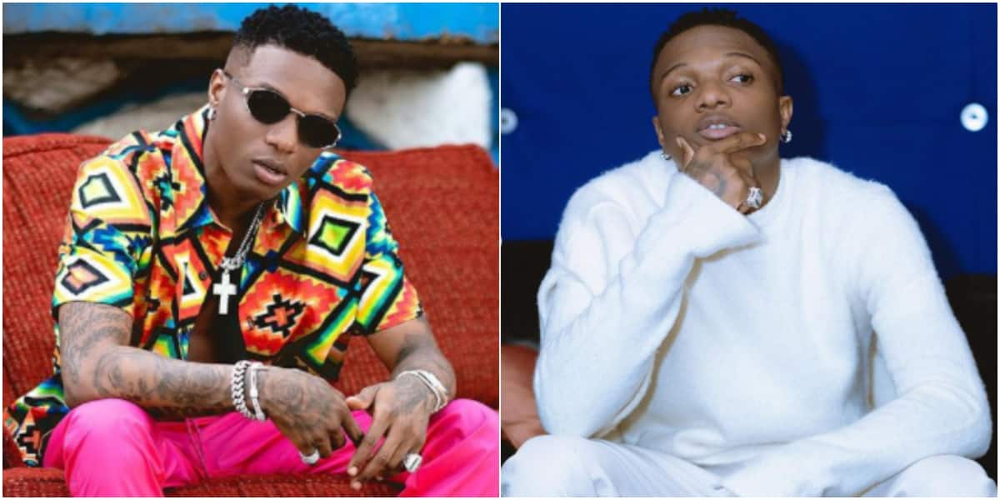

History on Wizkid
 Ayodeji Ibrahim Balogun popularly known as Wizkid was born on 16 July 1990, in Surulere, Lagos. He grew up in an interfaith household with twelve female siblings. His mother is a Pentecostal Christian and his father practices Islam. Wizkid attended Ijebu Ode Grammar School.He grew up listening to King Sunny Ade, Fela Kuti and Bob Marley.[13] In a radio interview with Tim Westwood in 2012, he said "his father has three wives".[14] In another interview with Adesope of Factory 78 TV, Wizkid said he formed a group called the Glorious Five with a couple of his church friends.[15] They managed to release an album prior to disbanding. Wizkid went by the stage name Lil Prinz until 2006.[16] He later met OJB Jezreel, a record producer who prevented him from recording for a year.[15] While visiting OJB's Point Beat Studios frequently, he watched 2 Face Idibia record songs for his Grass 2 Grace album. He was also present during the recording sessions for Sound Sultan's debut album Jagbajantis.[17][15] He cited Naeto C as one of the people who mentored and coached him when he was 15 years old. Wizkid inked a record deal with Empire Mates Entertainment in 2009. He co-wrote "Omoge You Too Much", a song from Banky W.'s The W Experience album.[15][17] He also worked with Naeto C, Ikechukwu and M.I while developing his craft.[18] In mid-2009, he dropped out of Lagos State University (LASU). He later attended Lead City University, but dropped out after completing two sessions.[17]Wizkid began recording his debut studio album Superstar in 2009.[17] He released "Holla at Your Boy" as the album's lead single on 2 January 2010.[19] The song was nominated for Best Pop Single, and earned him the Next Rated award at The Headies 2011. In addition to winning the award, he was awarded a 2012 Hyundai Sonata courtesy of the organizers.[20] Its music video was nominated for Most Gifted Newcomer Video at the 2011 Channel O Music Video Awards.[21]
On 2 April 2010, Wizkid released "Tease Me/Bad Guys" as the album's second single. It was initially released as a freestyle rap.[22] "Don't Dull", the album's third single, was released on 6 December 2010.[23] Superstar was recorded in English and Yoruba. It was released on 12 June 2011 by Empire Mates Entertainment. The album incorporates elements of Afrobeats, R&B, dancehall and reggae. While working on Superstar, Wizkid collaborated with record producers such as E-Kelly, Jay Sleek, Shizzi, DJ Klem, Masterkraft, Q-Beats and Samklef. The album features guest appearances from Banky W., Skales, D'Prince and Wande Coal. It was initially scheduled for release on 14 February 2011, but was later pushed back.[24] On 12 June 2011, Wizkid hosted a launch party for the album at the Expo Hall of the Eko Hotel and Suites. The launch party featured performances from Banky W, Skales, 2face Idibia, Samklef, Wande Coal, D'Prince, Olamide, eLDee, Jesse Jagz, Ice Prince, Lynxxx and Seyi Shay.[25] Superstar garnered Best Album of the Year at the 2012 Nigeria Entertainment Awards, and was nominated for Album of the Year at The Headies 2012.[26]
2015–2018: Sounds from the Other Side and the international success with "One Dance"
Wizkid was involved in the writing and production of Drake's "One Dance".
On 5 January 2015, Wizkid released the music video for "Ojuelegba", a song that highlights the struggles he endured in the early years of his recording career.[49] The song's official remix features vocals from Drake and Skepta; it premiered on OVO Sound Radio in July 2015.[50] Wizkid first announced that he was working on a new album during a visit to London in October 2014. He revealed "African Bad Gyal" as his collaborative single with Chris Brown and said it would be the lead single from his third studio album.[51] In April 2015, both Wizkid and Chris Brown performed "African Bad Gyal" at Brown's concert in Durban, South Africa.[52] Wizkid released "Expensive Shit", an Afrobeats song built on light guitars, saxophone lines and acoustic percussion in May 2015; the song was reported as being a likely inclusion on the album.[53] In July 2015, Wizkid announced on Twitter that Angélique Kidjo would be featured on the album.[54] In September 2015, he said he was dropping his EP and postponing the release of his third studio album. He made this announcement on Instagram shortly after the conclusion of 2Face Idibia's Fortified tribute concert.[55]
On 5 April 2016, Wizkid became Nigeria's first artist
Ayodeji Ibrahim Balogun popularly known as Wizkid was born on 16 July 1990, in Surulere, Lagos. He grew up in an interfaith household with twelve female siblings. His mother is a Pentecostal Christian and his father practices Islam. Wizkid attended Ijebu Ode Grammar School.He grew up listening to King Sunny Ade, Fela Kuti and Bob Marley.[13] In a radio interview with Tim Westwood in 2012, he said "his father has three wives".[14] In another interview with Adesope of Factory 78 TV, Wizkid said he formed a group called the Glorious Five with a couple of his church friends.[15] They managed to release an album prior to disbanding. Wizkid went by the stage name Lil Prinz until 2006.[16] He later met OJB Jezreel, a record producer who prevented him from recording for a year.[15] While visiting OJB's Point Beat Studios frequently, he watched 2 Face Idibia record songs for his Grass 2 Grace album. He was also present during the recording sessions for Sound Sultan's debut album Jagbajantis.[17][15] He cited Naeto C as one of the people who mentored and coached him when he was 15 years old. Wizkid inked a record deal with Empire Mates Entertainment in 2009. He co-wrote "Omoge You Too Much", a song from Banky W.'s The W Experience album.[15][17] He also worked with Naeto C, Ikechukwu and M.I while developing his craft.[18] In mid-2009, he dropped out of Lagos State University (LASU). He later attended Lead City University, but dropped out after completing two sessions.[17]Wizkid began recording his debut studio album Superstar in 2009.[17] He released "Holla at Your Boy" as the album's lead single on 2 January 2010.[19] The song was nominated for Best Pop Single, and earned him the Next Rated award at The Headies 2011. In addition to winning the award, he was awarded a 2012 Hyundai Sonata courtesy of the organizers.[20] Its music video was nominated for Most Gifted Newcomer Video at the 2011 Channel O Music Video Awards.[21]
On 2 April 2010, Wizkid released "Tease Me/Bad Guys" as the album's second single. It was initially released as a freestyle rap.[22] "Don't Dull", the album's third single, was released on 6 December 2010.[23] Superstar was recorded in English and Yoruba. It was released on 12 June 2011 by Empire Mates Entertainment. The album incorporates elements of Afrobeats, R&B, dancehall and reggae. While working on Superstar, Wizkid collaborated with record producers such as E-Kelly, Jay Sleek, Shizzi, DJ Klem, Masterkraft, Q-Beats and Samklef. The album features guest appearances from Banky W., Skales, D'Prince and Wande Coal. It was initially scheduled for release on 14 February 2011, but was later pushed back.[24] On 12 June 2011, Wizkid hosted a launch party for the album at the Expo Hall of the Eko Hotel and Suites. The launch party featured performances from Banky W, Skales, 2face Idibia, Samklef, Wande Coal, D'Prince, Olamide, eLDee, Jesse Jagz, Ice Prince, Lynxxx and Seyi Shay.[25] Superstar garnered Best Album of the Year at the 2012 Nigeria Entertainment Awards, and was nominated for Album of the Year at The Headies 2012.[26]
2015–2018: Sounds from the Other Side and the international success with "One Dance"
Wizkid was involved in the writing and production of Drake's "One Dance".
On 5 January 2015, Wizkid released the music video for "Ojuelegba", a song that highlights the struggles he endured in the early years of his recording career.[49] The song's official remix features vocals from Drake and Skepta; it premiered on OVO Sound Radio in July 2015.[50] Wizkid first announced that he was working on a new album during a visit to London in October 2014. He revealed "African Bad Gyal" as his collaborative single with Chris Brown and said it would be the lead single from his third studio album.[51] In April 2015, both Wizkid and Chris Brown performed "African Bad Gyal" at Brown's concert in Durban, South Africa.[52] Wizkid released "Expensive Shit", an Afrobeats song built on light guitars, saxophone lines and acoustic percussion in May 2015; the song was reported as being a likely inclusion on the album.[53] In July 2015, Wizkid announced on Twitter that Angélique Kidjo would be featured on the album.[54] In September 2015, he said he was dropping his EP and postponing the release of his third studio album. He made this announcement on Instagram shortly after the conclusion of 2Face Idibia's Fortified tribute concert.[55]
On 5 April 2016, Wizkid became Nigeria's first artist Back to Homepage